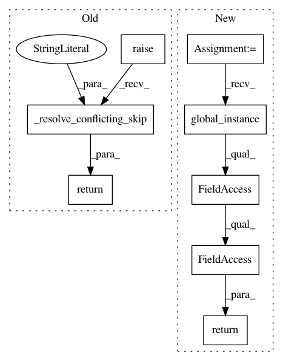

6d03fb02d5d1b6ccc76b06143548bc25a987337c,src/python/pants/backend/jvm/tasks/scalafmt_task.py,ScalaFmtCheckFormat,skip_execution,#ScalaFmtCheckFormat#,102
Before Change
@property
def skip_execution(self):
return super()._resolve_conflicting_skip(old_scope="lint-scalafmt")
def process_result(self, result):
if result != 0:
raise TaskError(
After Change
@property
def skip_execution(self):
return Scalafmt.global_instance().options.skip
def process_result(self, result):
if result != 0:
raise TaskError(
In pattern: SUPERPATTERN
Frequency: 4
Non-data size: 8
Instances
Project Name: pantsbuild/pants
Commit Name: 6d03fb02d5d1b6ccc76b06143548bc25a987337c
Time: 2020-03-06
Author: 14852634+Eric-Arellano@users.noreply.github.com
File Name: src/python/pants/backend/jvm/tasks/scalafmt_task.py
Class Name: ScalaFmtCheckFormat
Method Name: skip_execution
Project Name: pantsbuild/pants
Commit Name: 6d03fb02d5d1b6ccc76b06143548bc25a987337c
Time: 2020-03-06
Author: 14852634+Eric-Arellano@users.noreply.github.com
File Name: contrib/go/src/python/pants/contrib/go/tasks/go_checkstyle.py
Class Name: GoCheckstyle
Method Name: skip_execution
Project Name: pantsbuild/pants
Commit Name: 6d03fb02d5d1b6ccc76b06143548bc25a987337c
Time: 2020-03-06
Author: 14852634+Eric-Arellano@users.noreply.github.com
File Name: src/python/pants/backend/jvm/tasks/scalafix_task.py
Class Name: ScalaFixCheck
Method Name: skip_execution
Project Name: pantsbuild/pants
Commit Name: 6d03fb02d5d1b6ccc76b06143548bc25a987337c
Time: 2020-03-06
Author: 14852634+Eric-Arellano@users.noreply.github.com
File Name: contrib/googlejavaformat/src/python/pants/contrib/googlejavaformat/googlejavaformat.py
Class Name: GoogleJavaFormatLintTask
Method Name: skip_execution